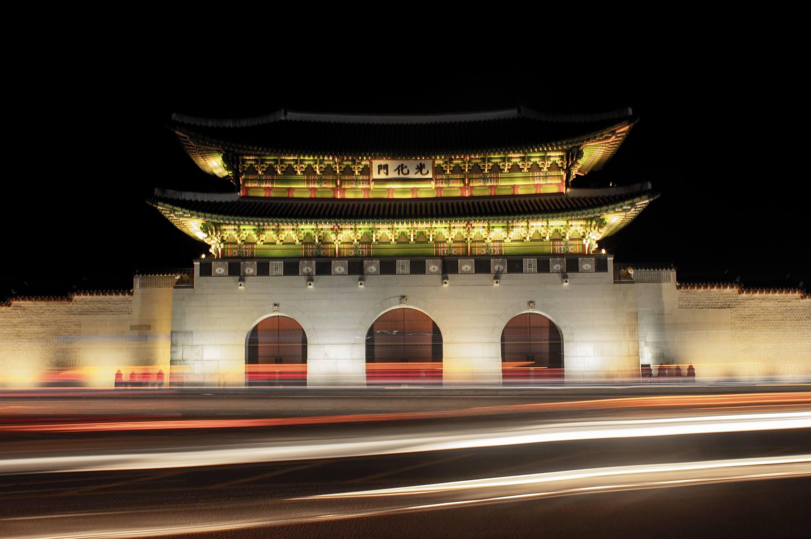

Gwanghwamun 광화문

Gwanghwamun refers to the main and the largest gate of Gyeongbokgung palace. As you head up from the subway station to the gwanghwamun plaza, you'll first see a golden statue of King Sejong, the genius behind the creator of Hangul, the Korean alphabets. If you turn back, you'll see a bronze statue of general Lee Sun Shin. These two giant figures protect the Gwanghwamun gate and the palace located behind. At night, the vibrant car lights and the gentle posture of the gate makes an unforseen contrast of the modern civilization and traditionality, offering a timeless view you can't find anywhere. Gwanghwamun is a place where the future and the past coexist.